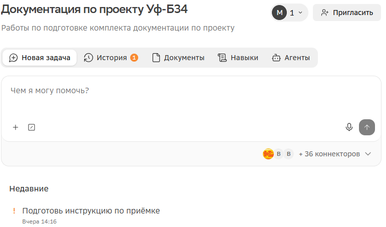
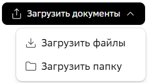
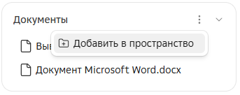
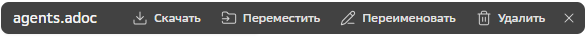
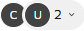
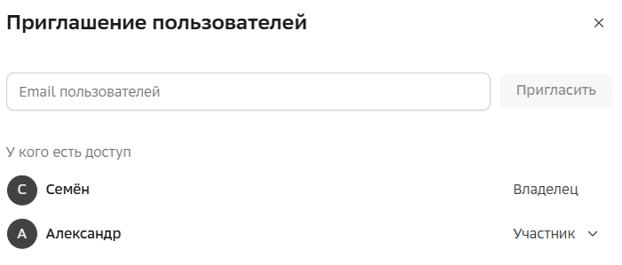

Пространства

Пространства созданы для совместной работы группы коллег. Особенность пространств — общий раздел с документами, которые доступны для всех задач пространства. На основе общих документов любой участник пространства может, например, искать информацию или формировать отчеты.
Вы также можете организовать пространство только для себя, для эффективной работы с большим объемом документов.
Особенности пространств
-
Каждый участник пространства видит только свои задачи пространства.
-
Каждому участнику в пространстве доступны только его коннекторы.
-
В задачах пространства применяются только навыки, добавленные в пространство.
-
В задачах пространства можно использовать только агентов, созданных в пространстве.
-
В задачах пространства можно применять как личные команды, так и добавленные в пространство.
-
Документы пространства, на вкладке Документы, видны всем участникам и доступны из всех задач пространства.
Быстрый старт в пространстве
-
Создайте пространство.
-
Пригласите пользователей.
-
Добавьте общие документы.
-
Добавьте навыки.
-
Добавьте команды.
-
Создайте агентов пространства.
1. Создание пространства
Для создания пространства, в главном меню нажмите Создать новое пространство  и укажите Название и Описание пространства.
и укажите Название и Описание пространства.
Также создать пространство можно в разделе Пространства с помощью кнопки Создать пространство.
После создания пространства вы становитесь его владельцем: только вы и приглашенные пользователи могут его видеть.
2. Приглашение пользователей
Вы можете поделиться пространством, пригласив в него пользователей системы.
Приглашать пользователей в пространство может только владелец пространства.
Для приглашения пользователя, в пространстве нажмите  Пригласить и в окне Приглашение пользователей укажите электронную почту пользователя системы.
Пригласить и в окне Приглашение пользователей укажите электронную почту пользователя системы.
| Пространство видят только его участники. |
Приглашенных пользователей затем можно удалить из пространства.
3. Добавление документов
Добавьте документы для создания общей базы знаний.
Добавлять документы могут все участники пространства.
Документы в пространство можно добавить двумя способами: загрузить с устройства и добавить из задачи пространства.
Для загрузки документа с вашего устройства, в пространстве, на вкладке Документы, нажмите Загрузить документы и выберите:
-
Загрузить файлы — загрузятся только выбранные файлы. Папки не загрузятся.
-
Загрузить папку — загрузится выбранная папка с дочерними папками, содержащими файлы. Пустая папка или дочерние пустые папки загружены не будут.

Для добавления документа из задачи в пространство, в задаче, в компоненте Документы, выберите → Добавить в пространство, затем в окне Добавление документов выберите документы для добавления.

| Документ, добавленный в пространство из задачи, — это отдельная копия. Он не связан с исходным документом в задаче и с самой задачей. |
4. Добавление навыков
Добавлять навыки в пространство могут все участники пространства.
Для добавления навыка в пространство, на вкладке Навыки нажмите Добавить навыки и в окне Навыки нажмите Добавить на нужном навыке.
5. Добавление команд
Добавлять команды в пространство могут все участники пространства.
В пространстве можно как создать новую команду, так и скопировать в него существующую команду.
Для создания новой команды в пространстве, на вкладке Команды нажмите Управление командами, а затем Создать команду. Заполните необходимые поля. Подробнее в главе Команды.
Для копирования существующей команды в пространство, на вкладке Команды нажмите Управление командами и в поле Расположение выберите, откуда скопировать команду (для выбора доступны ваши пространства и личные команды). Затем нажмите Копировать на карточке команды.
6. Создание агентов
Создавать агентов в пространстве может только его владелец.
Для создания агента в пространстве, на вкладке Агенты нажмите Создать агента и заполните необходимые поля. Подробнее в главе Агенты.
Действия с задачами
Управление задачами пространства выполняется на вкладке пространства Задачи.
Для создания задачи в пространстве нажмите Новая задача. Созданные задачи доступны в пространстве на вкладке  История и в разделе История основного меню.
История и в разделе История основного меню.
Редактирование и удаление задач происходит аналогично задачам вне пространства.
Действия с документами и папками
Управление документами пространства выполняется на вкладке пространства Документы.
Добавление документов в пространство описано в главе Быстрый старт.
Все действия с документами доступны всем участникам пространства.
Выбор документов и папок
Вы можете выбирать сразу несколько документов или папок, для этого используйте клавиши Control и Shift.
При выборе объектов появляется панель действий. Кнопки на ней применяются ко всем выбранным документам и папкам.

Скачивание документов в пространстве
Для скачивания документа в пространстве, на вкладке Документы, в строке с нужным документом выберите → Скачать или выберите документ и нажмите Скачать на панели действий.
Переименование документов в пространстве
Для переименования документа или папки, на вкладке Документы, в строке с нужным документом, выберите → Переименовать или выберите документ и нажмите Переименовать на панели действий.
Перемещение документов в пространстве
| Папки перемещаются вместе со всеми вложениями. |
Переместить документы и папки в пространстве можно двумя способами: с помощью кнопок, с помощью перетаскивания.
Для перемещения с помощью меню, на вкладке Документы, в строке с нужным документом, выберите → Переместить или выберите документ и нажмите Переместить в панели действий. Затем в окне Перемещение укажите новую папку.
Для перемещения с помощью перетаскивания, на вкладке Документы, выберите документ и перетащите в нужную папку.
Удаление документов в пространстве
| Папки удалятся вместе со всеми вложениями. |
Для удаления документа или папки, на вкладке Документы, в строке с нужным документом, выберите → Удалить, или выберите документ и нажмите Удалить в панели действий.
Создание папки
Для создания пустой папки, на вкладке Документы, нажмите Создать папку и укажите ее название.
Действия с навыками
Управление навыками пространства выполняется на вкладке пространства Навыки.
Добавление навыков в пространство описано в главе Быстрый старт.
Редактирование и удаление навыков происходит аналогично навыкам вне пространства. При этом удалять чужие навыки может только владелец пространства, а при редактировании чужого навыка он будет сохранен как копия исходного в пространстве и в ваших личных навыках.
| При редактировании вашего навыка в пространстве, он поменяется и в других пространствах, где был добавлен, а также в вашем разделе Навыки. При удалении навыка в пространстве, он удалится только из пространства. |
Действия с командами
Управление командами пространства выполняется на вкладке пространства Команды.
Добавление команда в пространство описано в главе Быстрый старт.
Редактирование, копирование и удаление команд происходит аналогично командам вне пространства. При этом удалять чужие команды может только владелец пространства, а при редактировании чужих команд доступна только кнопка Сохранить как копию, которая создаст копию редактируемой команды.
Действия с агентами
Управление агентами пространства выполняется на вкладке пространства Агенты.
Добавление агентов в пространство описано в главе Быстрый старт.
Редактирование и удаление агентов происходит аналогично агентам вне пространства и доступно только владельцу пространства.
Просмотр и удаление участников
Просматривать и удалять участников может только владелец пространства.
Для просмотра участников пространства, в пространстве нажмите на выпадающий список участников 
Для удаления участников пространства, в пространстве нажмите Пригласить и в открывшемся окне Приглашение пользователей, напротив нужного пользователя, выберите Удалить пользователя из пространства.

Действия с пространствами
Просмотр доступных пространств
-
В разделе Пространства — все пространства.
-
В разделе Главная — последние пространства, с которыми вы работали.
Раздел Пространства
Для просмотра пространств, в основном меню нажмите Показать все пространства, — откроется раздел Пространства.
В разделе можно найти пространства по названию и отфильтровать по признаку архивного пространства. Также пространства можно добавлять в избранное с помощью кнопки — такие пространства закрепляются сверху, в списке основного меню.
Раздел Главная
В разделе показаны последние пространства, с которыми вы работали.
Переименование пространства
Переименовывать и изменить описание пространства может только владелец.
Для переименования пространства, в разделе Пространства, на карточке пространства, выберите → Изменить.
Архивация пространства
Архивировать пространство, как и возвращать из архива, может только его владелец.
Пространства можно архивировать. Архивное пространство доступно только на просмотр: все участники могут видеть задачи и документы, но работа в нем недоступна.
-
Для архивации пространства из раздела Пространства, в карточке нужного пространства выберите → Архивировать.
-
Для архивации пространства из самого пространства, в верхнем правом углу выберите → Архивировать.
-
Для возврата из архива пространства из раздела Пространства, в карточке нужного пространства выберите → Вернуть из архива.
-
Для архивации пространства из самого пространства, в верхнем правом углу выберите → Вернуть из архива.
Удаление пространства
Удалять пространство может только его владелец.
-
Для удаления пространства из раздела Пространства, в карточке нужного пространства выберите → Удалить.
-
Для удаления пространства из самого пространства, в верхнем правом углу выберите → Удалить
| Удаленное пространство со всеми документами на 30 дней помещается в корзину, затем удаляется и оттуда. |